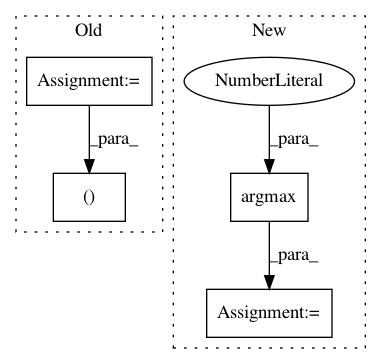

39ee36a7c2c9cd8e04cfbb19c64e55542f76c794,tests/layers/object_detection/test_proposal_target.py,,test_get_bbox_regression_labels,#,251
Before Change
def test_get_bbox_regression_labels():
n = 10
bbox_target_data = keras.backend.zeros((n, 4))
num_classes = 3
labels = numpy.reshape(
[[0, 1, 0], [1, 0, 0], [1, 0, 0], [0, 0, 1], [0, 1, 0]], (1, -1, 3))
After Change
bbox_target_data = keras.backend.variable(bbox_target_data)
num_classes = 3
labels = numpy.array([[0, 1, 0], [1, 0, 0], [1, 0, 0], [0, 0, 1], [0, 1, 0]])
labels = numpy.argmax(labels, axis=1)
labels = keras.backend.variable(labels)
bbox_targets = proposal_target.get_bbox_regression_labels(bbox_target_data, labels, num_classes)
bbox_targets = keras.backend.eval(bbox_targets)
In pattern: SUPERPATTERN
Frequency: 4
Non-data size: 4
Instances
Project Name: broadinstitute/keras-rcnn
Commit Name: 39ee36a7c2c9cd8e04cfbb19c64e55542f76c794
Time: 2017-11-14
Author: jyhung@broadinstitute.org
File Name: tests/layers/object_detection/test_proposal_target.py
Class Name:
Method Name: test_get_bbox_regression_labels
Project Name: yahoo/TensorFlowOnSpark
Commit Name: 981e4266d4ea816b08a762193bd52f40cd1a3242
Time: 2019-08-07
Author: leewyang@verizonmedia.com
File Name: examples/mnist/keras/mnist_inference.py
Class Name:
Method Name: inference
Project Name: Shawn1993/cnn-text-classification-pytorch
Commit Name: 5c177f3d9a29fc7737bd4734315820d1c11c7e87
Time: 2019-07-17
Author: rriva002@ucr.edu
File Name: cnn_text_classification.py
Class Name: CNNClassifier
Method Name: predict
Project Name: scikit-multiflow/scikit-multiflow
Commit Name: a8d354aa3f1d796ebfcf41586af1eb925f229ecc
Time: 2020-04-01
Author: 17923265+jacobmontiel@users.noreply.github.com
File Name: src/skmultiflow/lazy/knn_classifier.py
Class Name: KNNClassifier
Method Name: predict